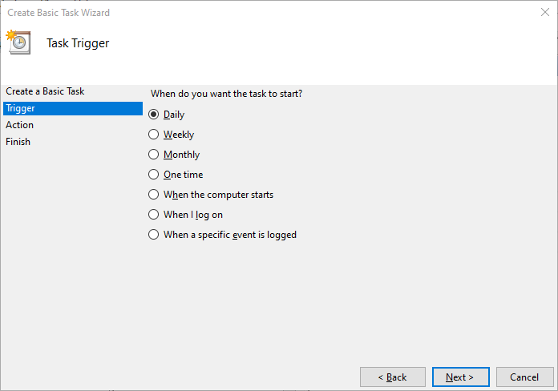
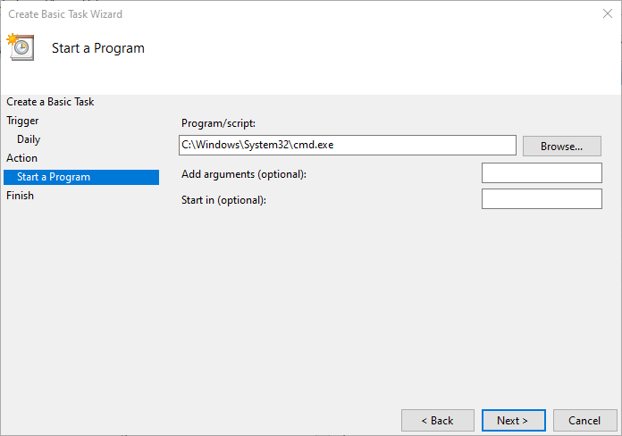

Hello Friends,
Welcome To Infinitbility!
Today, we are going to learn
- how to setup crontab on windows, mac, ubuntu.
- cronjob types ( Command, and url )
- cron schedule expression examples.
what is cron?
Cron is a time-based job scheduling daemon found in Unix-like operating systems, including Linux distributions. Cron runs in the background and tasks scheduled with cron, referred to as “cron jobs,” are executed automatically, making cron useful for automating maintenance-related tasks.
Set Crontab on windows
On Microsoft Windows’, cron jobs are known as Scheduled Tasks. They can be added through the Windows Task Scheduler user interface, by using PowerShell or with help of schtasks.exe.
Running a task at specific time or at recurring dates is one of the common administrative tasks on all operating systems. On Linux, the tool cron is used for this purpose. Microsoft Windows’ counterpart for cron is the Scheduled Task.
Each Scheduled Task is planned by the Task Scheduler. This application has been available since Windows NT 4.0, known as Task Scheduler 1.0. On modern Windows systems (Windows Server 2016, 2019, Windows 10 etc.), the Task Scheduler is available in version 2.0.
Note: The following three methods require that you are logged in with an administrative account. Make sure that you have access to an account with administrative permissions!
Using Windows Task Scheduler
You can open the Windows Task Scheduler by either
- clicking on Start and typing Task Scheduler
- or hitting Win+R and typing taskschd.msc
If you don’t have administrative permission, you can hit Win+R and type
runas /user:${ADMIN} taskschd.msc
${ADMIN} must be replaced with your administrator’s account username.
In both cases, the following Microsoft Management Console (MMC) will open
In the right screen click on Create Basic Task
The now opening window cotains is a wizard. You can specify when a specific application has to be executed.
-
On the first screen, type a name and description of your new cron job
-
You can select the Trigger on the second screen. A trigger means when a specific task has to be executed.
You can choose between - Daily - Weekly - Monthly - One time - When the computer starts (before you have logged on) - When I log on - When a specific event is logged
-
On the Action tab you can specify which command has to be executed. Specify a path to the .exe or .bat file and click on Next
 -
On the last screen you see all information about the task. Click on Finish to add it.
The new scheduled task is automatically activated. It will be started when the next specified trigger is hit.
Using the command line tool schtasks.exe
You can also add the new scheduled tasks by using the command line. This is handy if you already have a batch file to automate something. For more complex or dynamic task definitions, you might want to use the PowerShell method below.
On Windows, you can use schtasks.exe to create, delete or modify scheduled tasks. To use schtasks.exe, start a new command line as an administrator by hitting Win+R and type cmd.exe. Everything you can do with the Microsoft Management Console can be done with schtasks.exe.
Please take a look at Microsofts official documentation for all available options.
| Sr NO | Argument | Description |
|---|---|---|
| 1 | /Create | Add a new scheduled task |
| 2 | /tn | Name of task |
| 3 | /sc | schedule frequency (MINUTE, HOURLY, DAILY and so on) |
| 4 | /d | On which day or day of month the task shall be scheduled. You can use * for scheduling on every day |
| 5 | /st | Start time in format HH:mm |
| 6 | /tr | Application to run, e.g. cmd.exe |
To add a new task, you can use the following code
schtasks.exe /create /tn my-task /sc daily /st 13:00 /tr cmd.exe
This would execute the cmd.exe every day on 13:00. The task automatically appears in the Task Scheduler MMC:
*** Task added with schtasks.exe ***
Where are Windows scheduled tasks stored?
This one might come in handy if you are debugging scheduled tasks or jobs. In some cases, your task is not executed due to some quoting or escaping issues.
Windows stores scheduled jobs and tasks in the following locations als XML files:
| Type | Location | Info |
|---|---|---|
| Task | %WINDIR%\System32\Tasks | Stored as XML file |
| Job | $home\AppData\Local\Microsoft\Windows\PowerShell\ScheduledJobs | Stored as XML file but not the same as the Task XML file definition |
Set Crontab on mac os
fire up the terminal and run crontab -e. This should open up a file in vim for you. This file is essentially where you can list out your cron jobs — each job on its own line.
crontab -e
Open up your terminal command prompt on your Mac and navigate to the home directory by running cd ~/. For me, it is Users/Infinitbility.
cd ~/
We will be using Mac OS’s in-built crontab feature to write our cron jobs.
Type crontab -e and press Enter.
crontab -e
This should open up an empty file, this is where you will write your cron jobs. You can write the job to run a shell script or a Python script in this case.
Type :q! to exit the editor.
:q!
Before we write our cron job, we should have a script we want to run. I’ve already created a directory /Documents/Python/cron in my home directory and created a simple script called cron_test.py.
Note: This Python script needs to be executable so change the permissions on it to allow for that, I just ran a chmod 777 cron_test.py.
chmod 777 cron_test.py
The cron_test.py script simply creates a directory with the current date and time as the name.
The script text is as follows if you want to use the same script:
cron_test.py
#!/usr/bin/python3
from datetime import datetime
import os
sysDate = datetime.now()
# convert system date to string
curSysDate = (str(sysDate))
# parse the date only from the string
curDate = curSysDate[0:10]
# parse the hour only from the string
curHour = curSysDate[11:13]
# parse the minutes only from the string
curMin = curSysDate[14:16]
# concatenate hour and minute with underscore
curTime = curHour + '_' + curMin
# val for the folder name
folderName = curDate + '_' + curTime
# make a directory
os.mkdir(folderName)
You might wonder what that first line, #!/usr/bin/python3, is. That line is referred to as a shebang and how the cron job will interpret the script so in this case, it will run the cron_test.py with Python (as if you executed Python cron_test.py in your terminal).
OK, so we have Python 3.x installed, we have a Python script, now let’s write the cron job to run this! Let’s say we want to run this script every minute (mostly for the purpose of testing on your end so you can see the results without waiting too long). The cron job syntax is as follows:
*/1 * * * * cd ~/Documents/Python/cron && /usr/local/bin/python3 cron_test.py >> ~/Documents/Python/cron/cron.txt 2>&1
What does the above mean? Let’s analyze it quickly.
*/1 * * * * simply means that the job will run every minute.
cd ~/Documents/Python/cron && /usr/local/bin/python3 navigates to the directory where the script you want to execute is located and specifies to use Python instead of Bash to execute (since it is a Python script, also remember that we added the shebang within the script, I found that it needed to be in both places to work).
cron_test.py is the script filename.
>> ~/Documents/Python/cron/cron.txt specifies where to output the logs in case the execution of the job has any issues.
2>&1 simply disables email because by default, the cron job will try to send an email but we don’t have an address specified.
Anyway, that should be enough to get you writing and testing your scripts, so go on!
Set Crontab on ubuntu
Almost every Linux distribution has some form of cron installed by default. However, if you’re using an Ubuntu machine on which cron isn’t installed, you can install it using APT.
Installing Cron
Before installing cron on an Ubuntu machine, update the computer’s local package index:
sudo apt update
Then install cron with the following command:
sudo apt install cron
You’ll need to make sure it’s set to run in the background too:
sudo systemctl enable cron
// Output
Synchronizing state of cron.service with SysV service script with /lib/systemd/systemd-sysv-install.
Executing: /lib/systemd/systemd-sysv-install enable cron
Following that, cron will be installed on your system and ready for you to start scheduling jobs.
Managing Crontabs
Once you’ve settled on a schedule and you know the job you want to run, you’ll need to put it somewhere your daemon will be able to read it.
crontab -e
Output choose vim 2
# output
Output
no crontab for sammy - using an empty one
Select an editor. To change later, run 'select-editor'.
1. /bin/nano <---- easiest
2. /usr/bin/vim.basic
3. /usr/bin/vim.tiny
4. /bin/ed
Choose 1-4 [1]:
set cron example on ubuntu
# Edit this file to introduce tasks to be run by cron.
#
# Each task to run has to be defined through a single line
# indicating with different fields when the task will be run
# and what command to run for the task
#
# To define the time you can provide concrete values for
# minute (m), hour (h), day of month (dom), month (mon),
# and day of week (dow) or use '*' in these fields (for 'any').#
# Notice that tasks will be started based on the cron's system
# daemon's notion of time and timezones.
#
# Output of the crontab jobs (including errors) is sent through
# email to the user the crontab file belongs to (unless redirected).
#
# For example, you can run a backup of all your user accounts
# at 5 a.m every week with:
# 0 5 * * 1 tar -zcf /var/backups/home.tgz /home/
#
# For more information see the manual pages of crontab(5) and cron(8)
#
# m h dom mon dow command
* * * * * curl http://www.google.com
Special Syntax
There are also several shorthand commands you can use in your crontab file to help streamline job scheduling. They are essentially shortcuts for the equivalent numeric schedule specified:
| Shortcut | Shorthand for |
|---|---|
| @hourly | 0 * * * * |
| @daily | 0 0 * * * |
| @weekly | 0 0 * * 0 |
| @monthly | 0 0 1 * * |
| @yearly | 0 0 1 1 * |
crontab schedule expression examples
Here, added many expression examples how to setup cron.
Minute’s Examples
At every minute
* * * * *
At every 2nd minute or even minutes
*/2 * * * *
At every 2nd minute from 1 through 59 or odd minutes
1-59/2 * * * *
At every 5th minute
*/5 * * * *
hour’s Examples
every hour
0 * * * *
every 2 hours
0 */2 * * *
day’s Examples
every day or daily
0 0 * * *
every day 8am
0 8 * * *
every specific day
0 0 * * MON
every weekday
0 0 * * 1-5
weekly Examples
once a week or only sunday
0 0 * * 0
monthly Examples
0 0 1 * *
every year
0 0 1 1 *
Thanks for reading…